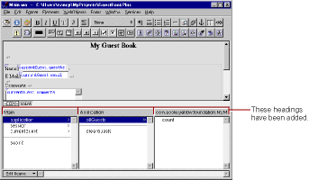

Erratum
The WebObjects Builder editing view layout has changed and longer matches the screenshots in this book. The object browser now has headings over the columns. Each heading specifies the class of the object selected in the previous column; this class defines the keys and actions listed in the column. In the example screenshot below, the user has selected the application key. The heading above the second column indicates that the application key refers to an object of the Application class that defines the allGuests key and the clearGuests action.
